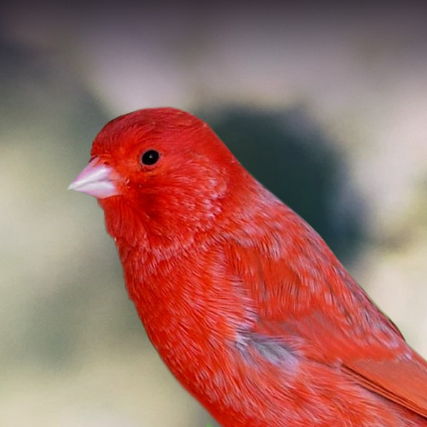

All About Red Canaries
Red canaries are one of the most fascinating and vibrant pets you can keep. Did you know their unique color doesn't occur naturally in wild canaries? Breeders developed them by crossing traditional yellow canaries with the red siskin.
In this Project 2, I am exploring how to customize a multi-column web template while showcasing a fun topic like exotic birds, practicing my HTML and CSS styling skills.
